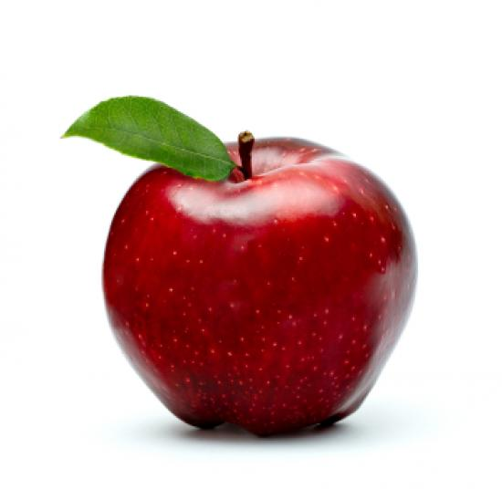
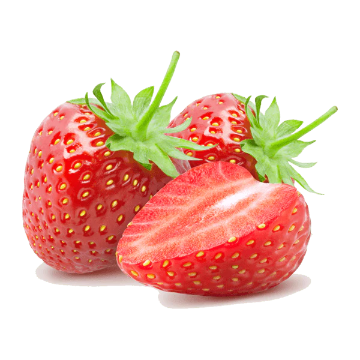

Чому фрукти корисні?
Фрукти — це невід’ємна частина здорового харчування. Вони багаті на вітаміни, мінерали та антиоксиданти, які допомагають зміцнювати імунну систему, підтримувати здоров’я шкіри та організму загалом. Наприклад, вітамін С у цитрусових підвищує опірність до застудних захворювань, а клітковина, що міститься у яблуках, сприяє нормалізації травлення.
Фрукти

Яблуко

Апельсин

Банан

Полуниця